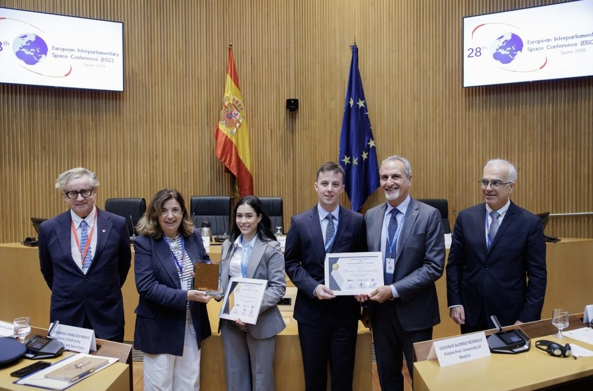
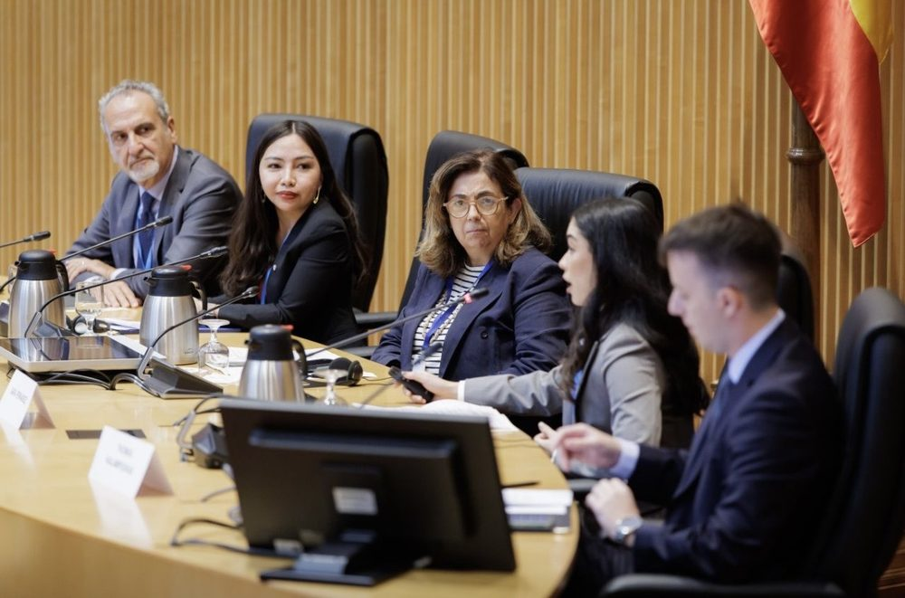

1st Prize, European Space for Sustainability Award 2026
"The 2026 award went to Sara Fernández for her project, 'CRMA-Watch: A Three-Tier Copernicus Compliance Protocol for Independent Environmental Monitoring of EU Critical Mineral Extraction Sites'. Her study proposes using existing Copernicus satellite data to independently monitor whether critical raw material extraction and processing sites comply with EU environmental limits. The approach could complement periodic inspections by identifying possible environmental breaches and cross-checking satellite measurements against emissions reported by operators, without requiring new hardware or legislation."
Awarded by ESA, ESPI and the European Interparliamentary Space Conference at the EISC plenary, Spanish Congress of Deputies, Madrid, 21 September 2026. Prize: ESA mentorship programme, four-week visiting researcher placement at ESPI in Vienna, one day at the European Astronaut Centre. ESPI announcement.
Photos: EISC 2026